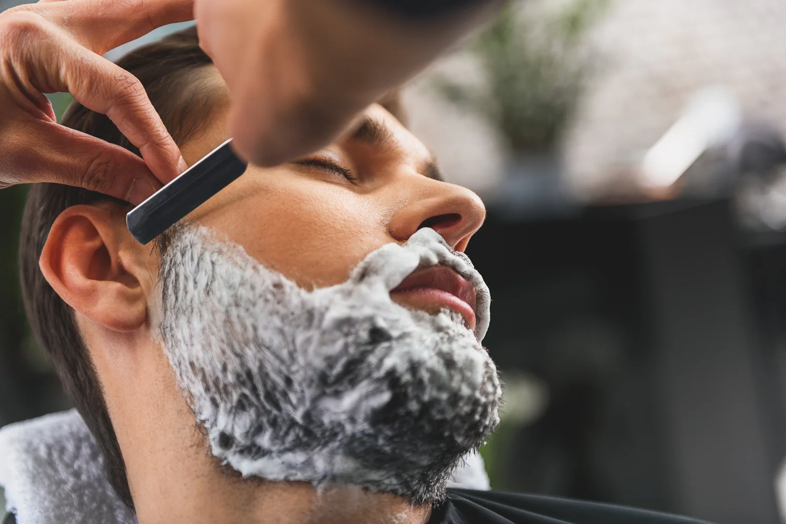
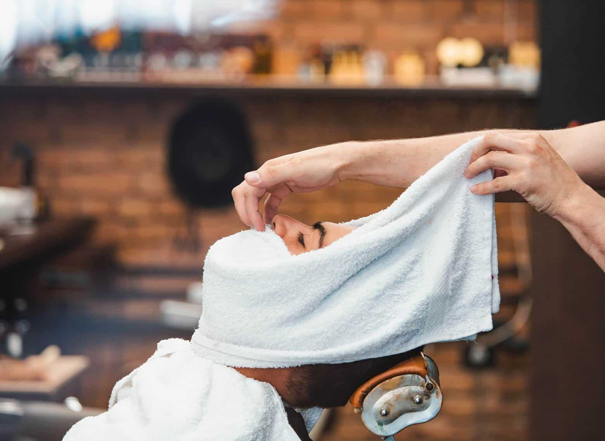

Mi az az egyenes borotvás borotválás?
Az egyenes borotva – más néven klasszikus vagy nyílóborotva – a borotválás leghagyományosabb és legprecízebb eszköze. Évszázadokon át ez volt az egyetlen módszer a férfiak arcszőrzetének gondozására, és a modern barber shopokban ma is kiemelt helyet foglal el.
Egy jól megélezett egyenes borotvával a képzett borbély olyan simán és közelről tudja eltávolítani az arcszőrzetet, ahogy azt egyetlen betétes vagy elektromos borotva sem képes megközelíteni. Az eredmény nemcsak esztétikailag más – a bőr tapintása, a borotválkozás utáni frissesség és a tartósság is teljesen más szinten van.

Hogyan zajlik a klasszikus borotválás lépésről lépésre?
A profi barber shopban végzett egyenes borotvás borotválás egy jól felépített folyamat – nem csak a borotva odahúzásáról szól. Minden lépés a végeredményt és a bőr kíméletét szolgálja.
-
Előkészítés – meleg törülköző A meleg gőzös törülköző felpuhítja a bőrt és az arcszőrzetet, megnyitja a pórusokat – ez teszi lehetővé a valóban közeli, irritációmentes vágást.
-
Borotvakrém vagy szappan felvitele Minőségi borotvakrém vagy hagyományos borotvakomp ecsettel felverve védi a bőrt és lehetővé teszi, hogy a borotva súrlódás nélkül csússzon.
-
Borotválás egyenes borotvával A borbély a haj növekedési irányával megegyező, majd azzal ellentétes irányban is húz – ez adja a tökéletes simaságot precíz kontúrok mellett.
-
Hideg törülköző és aftershave A hideg törülköző bezárja a pórusokat, az aftershave pedig megvédi és megnyugtatja a bőrt borotválkozás után.

Miért jobb az egyenes borotvás borotválás?
Sokan először óvatosan közelítenek az egyenes borotva gondolatához – de azok, akik egyszer kipróbálják egy profi borbélynál, ritkán térnek vissza a hagyományos betétes borotvához. Az okok egyértelműek.
Az egyenes borotva egyetlen, éles pengével dolgozik – nem nyom, nem húz, nem irritál. A többpengés patron-borotvák éppen azért okoznak bebenőtt szőröket és bőrpírt, mert az egymás utáni pengék a bőr alá húzzák, majd elvágják a szőrszálat. Ezzel szemben az egyenes borotva a felszínen, egyenletesen vágja el a szőrzetet.
- Sokkal simább bőrfelület, mint betétes borotvával
- Kevesebb bőrirritáció és bebenőtt szőr
- Precízebb kontúrvágás a nyakvonalnál és az arcél mentén
- Hosszabb ideig sima marad a bőr borotválkozás után
- A bőr idővel megszokja – kevesebb érzékenység rendszeres borotválásnál
Kinek ajánlott a klasszikus borotválás?
Az egyenes borotvás borotválás minden férfinak ajánlható – de különösen azoknak érdemes kipróbálni, akik rendszeresen küzdenek bőrirritációval, bebenőtt szőrökkel vagy akik egyszerűen valami különlegeset szeretnének a hétköznapi borotválkozás helyett.
Azoknak is ideális, akik a szakállukat igazíttatnák, de a nyakvonalat és az arcél mentén tisztán szeretnék tartani a bőrt. A klasszikus borotválás és a szakálligazítás kombinálva az egyik legteljesebb barber shop élményt adja.
- Érzékeny, könnyen irritálódó bőrűeknek kifejezetten ajánlott
- Bebenőtt szőröktől szenvedőknek tartós megoldást nyújthat
- Különleges alkalmak előtt – esküvő, állásinterjú, fontos esemény
- Mindenkinek, aki egyszer igazán különleges borotválkozási élményt szeretne
Klasszikus borotválás a Bosphorus barber shopban
A Bosphorus barber shopban a klasszikus egyenes borotvás borotválás az egyik legkedveltebb szolgáltatás. A borbélyok pontosan tudják, hogyan kell a különböző bőrtípusokhoz és szőrzetsűrűségekhez igazítani a technikát – az eredmény mindig sima, irritációmentes és tartós.
A borotválás végezhető önállóan vagy hajvágással, szakálligazítással kombinálva is. Sokan éppen emiatt választják a Bosphorus barber shopot: egy látogatás alatt az egész megjelenés rendbe kerül – haj, szakáll és borotvált bőr egyszerre.
- Egyenes borotvás borotválás tapasztalt borbélyoktól
- Meleg törülközős előkészítés, minőségi borotvakrémmel
- Kombinálható hajvágással és szakálligazítással
- Budapest 7. kerületében, könnyen elérhető helyszínen
Foglalj időpontot klasszikus borotválásra
Tapasztald meg te is, miért tér vissza újra és újra mindenki az egyenes borotvás borotváláshoz. Sima bőr, precíz kontúrok és egy igazi barber shop élmény – foglalj most a Bosphorusba.